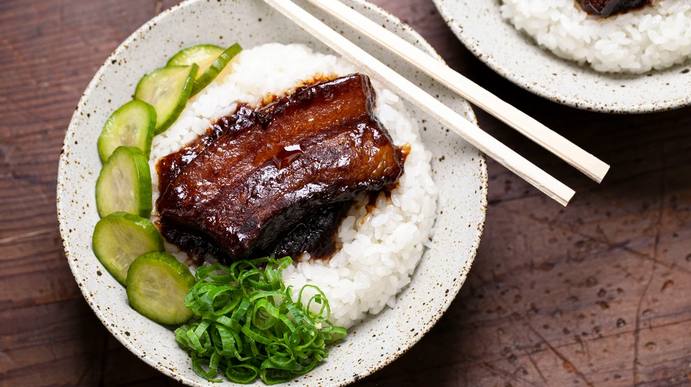

Lu Rou Fan

Description
Braise pork belly in a sweet and savory mixture of dashi, rock sugar, and peanut butter, then serve with rice and crunchy pickles.
Ingredients
- 1 (5.5 pound|2.5 kg) piece skin-on, boneless slab pork belly
- 1 ½ ounces|40 grams kombu
- 10 dried shiitake mushrooms
- 2 ounces|60 grams bonito flakes
- 2 ounces|60 grams rock sugar, smashed up into small pieces
- 2 tablespoons plus 2 teaspoons vegetable oil
- 1 (2-inch) piece ginger, peeled and finely chopped
- 5 scallions, finely chopped, plus scallion greens, thinly sliced, for garnish
- 5 shallots, peeled and finely chopped
- 1 head garlic, peeled and finely chopped
- 1 cup|250 ml soy sauce, preferably Kimlan
- 1 cup|250 ml dark soy sauce, preferably Kimlan
- 3 tablespoons Chinese five-spice powder
- 2 tablespoons Bull's head shallot sauce
- 3 cups|230 grams fried shallots
- 2 tablespoons smooth peanut butter, preferably Skippy
- 2 cups|430 grams premium short grain rice
- 2 whole star anise
Steps
- Make the pickles: Toss the cucumbers with the salt in a medium bowl and lightly cure for about 15 minutes, then rinse.
- Whisk the vinegar and soy sauce together in a medium bowl, then stir in the sugars until dissolved. Add the cucumbers, cover, and refrigerate at least 4 hours.
- Make the lu rou fan: Bring a large pot of water to a boil. Add the pork belly and cook about 25 minutes. Using tongs, transfer the pork to a cutting board and slice about ⅔ of it into ½-inch-thick lardons. Cut the remaining third into 1-inch thick pieces, about 3-inches wide.
- Bring 3 quarts|2800 ml water to a simmer in a large saucepan. Add the kombu and shiitakes and cook, covered, for 20 minutes, then stir in the bonito and continue to cook, covered, for 10 minutes more. Strain, discarding the bonito and kombu. Thinly slice the shiitakes and set the mushrooms and dashi aside.
- Melt the rock sugar with 1 tablespoon of the oil in a large saucepan over medium until it turns dark amber, 12 to 14 minutes, then stir in ½ cup|125 ml hot water. Pour into a heat proof bowl, then return the saucepan to the stove.
- Add 1 tablespoon of the oil and increase the heat to medium-high. Cook the large pieces of pork belly, flipping once, until golden, 7 to 8 minutes. Set the pork belly aside onto a plate and, working in batches, cook the lardons until golden, 5 to 6 minutes per batch. Add in about 1 tablespoon of the rock sugar per batch as the lardons cook. Transfer to the plate with the large pork belly pieces.
- Stir in the reserved shiitakes, the ginger, scallions, the chopped shallots, and the garlic and cook until soft, about 5 minutes. Add the soy sauces and cook until toasted, about 2 minutes, then stir in all of the pork belly, the five-spice, and the Bull’s Head sauce. Cook 2 to 3 minutes, then stir in the reserved dashi and any remaining melted rock sugar and bring to a simmer over medium. Stir in the crispy shallots and cook, uncovered, until the pork belly is almost fork tender, about 1 ½ hours.
- Stir in the peanut butter and continue cooking, stirring occasionally, about 1 hour. Keep warm.
- Meanwhile, make the rice. Rinse the rice once and cook in a rice cooker with the remaining 2 teaspoons oil, the star anise, and 2 cups|500 ml water.
- To serve, divide the rice among bowls and top with some of the pork belly and its sauce. Drain some cucumber slices from the marinade and add to the dish along with some scallion greens for garnish.